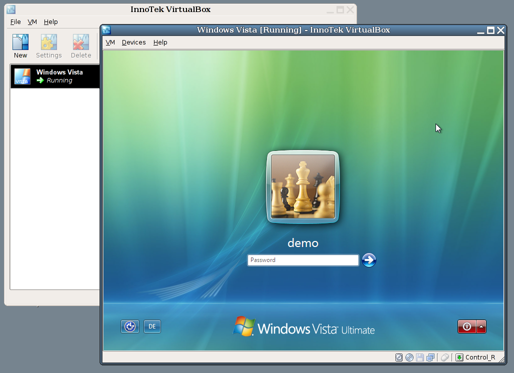
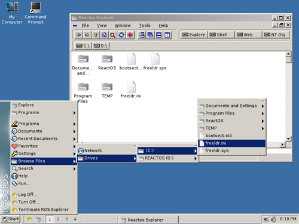

VirtualBox 와 ReactOS
오랜만에 rss 들을 훑어보면서 재미있는 것 2개를 발견했다.
하나는 VMWare 를 대체할만한 VirtualBox 라는 가상화 툴과 ReactOS 라는 윈도우즈를 오픈소스로 새로 만드는 OS 이다.
VirtualBox 는 GPL 의 기반하의 가상화툴이다. 생각보다 깔끔한 인터페이스를 가지고 있고, 테스트해본 결과도 꽤 만족할만한 수준이다. 개인적으로는 VMWare 보다는 속도가 조금 떨어지는 감은 있다. 우분투, 윈도우xp, Vista 등 대부분의 OS 를 guest 로 지원해줍니다.

ReactOS 는 윈도우즈XP 와의 완벽한 호환성을 목적으로 개발되고 있는 OS 입니다. 최근 글에서는 실제로 해킹된 윈도우즈 소스와 ReactOS 와 소스가 유사하다는 내용도 있습니다. 하지만 직접 설치해본 결과 아직 쓸만한 수준은 아니고, 개발된다는 데에 의의가 있다고 할 수 있겠습니다. 재미있는 점은 기본 프로그램 메뉴에 get firefox 라는 메뉴가 있어서, 웹브라우저가 탑재된 것이 아니라 바로 다운 받아서 설치한다는 점입니다. 참고로 ISO 파일은 약 20메가입니다.
